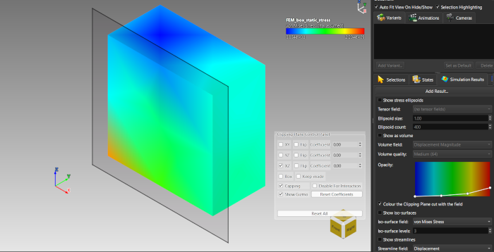
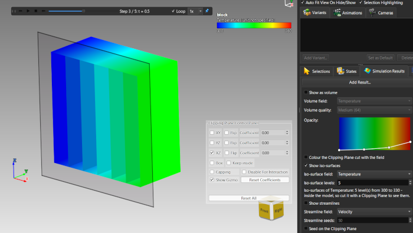
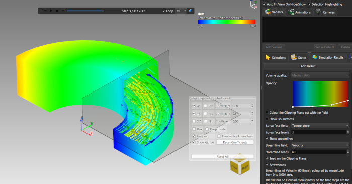
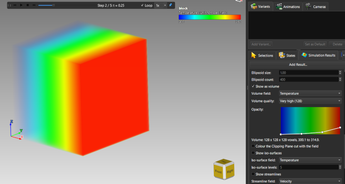
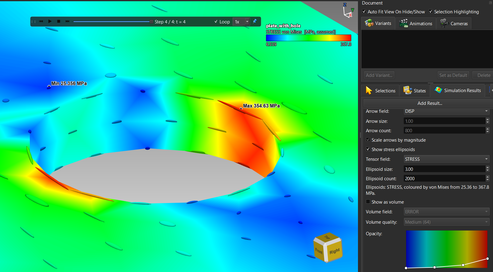

Lektion 20: Ins Innere eines Ergebnisses schauen
Einführung
Ein Ergebnis wird als Außenfläche gezeichnet, aber die interessanten Werte liegen oft im Inneren. Diese Lektion zeigt fünf Wege hinein: das Ergebnis mit einem Schnitt aufschneiden, Isoflächen extrahieren, Stromlinien durch eine Strömung verfolgen, ein Feld als Volumen darstellen sowie Vektoren und Spannungstensoren als Glyphen zeichnen.
sample-models/Simulation: FEM_box_static_stress.vtu (Schnitte), block.cgns (Isoflächen und Volumen; block.exo und block.vtkhdf enthalten dieselben Daten), duct.cgns (Stromlinien), plate_with_hole.frd und stress_states.vtu (Spannungsellipsoide).
Schnitte
Die Schnittebenen aus Lektion 12 schneiden ein Ergebnis wie jedes andere Modell, und die Schnittfläche kann die Werte des Feldes zeigen statt einer leeren Höhlung.
FEM_box_static_stress.vtu, klicken Sie in der Ansichtssymbolleiste auf Schnittansicht und aktivieren Sie eine Ebene.
Ein von einer Schnittebene geschnittener Würfel, die Schnittfläche nach Spannung eingefärbtIsoflächen
Eine Isofläche ist die Fläche, auf der ein Feld einen konstanten Wert hat - etwa eine Hülle gleicher Temperatur. Sie macht das Innere eines Volumens sichtbar, ohne es zu schneiden.
block.cgns, einen Block aus Hexaedern mit einem Temperaturfeld über fünf Schritte.
Isoflächen des Temperaturfeldes im BlockStromlinien
Stromlinien folgen einem Geschwindigkeitsfeld: Jede Linie ist der Weg, den ein masseloses Teilchen nähme, wenn die Strömung beim aktuellen Schritt eingefroren wäre.
duct.cgns: ein halbringförmiger Kanal mit einer Drallströmung über vier Schritte.
Stromlinien, die durch den Kanal wirbeln, mit PfeilspitzenVolumendarstellung
Als Volumen anzeigen stellt ein Feld als halbtransparente Wolke statt als Fläche dar. Wählen Sie das Volumenfeld, eine Volumenqualität (Niedrig 32 bis Sehr hoch 128) und formen Sie die Deckkraftkurve so, dass nur der Wertebereich sichtbar ist, der Sie interessiert.
block.cgns die Isoflächen aus und aktivieren Sie Als Volumen anzeigen mit Temperature als Volumenfeld.
Das Temperaturfeld des Blocks als Volumen dargestelltVektorpfeile
Vektorpfeile anzeigen zeichnet für ein Vektorfeld an abgetasteten Punkten der Fläche je einen Pfeil. Wählen Sie das Pfeilfeld, die Pfeilgröße (stabil beim Zoomen) und die Pfeilanzahl. Ist Pfeile nach Betrag skalieren aus, haben alle Pfeile dieselbe Länge, und nur die Farbe zeigt den Betrag.
Spannungsellipsoide
Für einen symmetrischen Spannungstensor zeichnet Spannungsellipsoide anzeigen an abgetasteten Punkten je ein Ellipsoid. Seine drei Achsen zeigen in die Hauptrichtungen, ihre Längen folgen den Hauptwerten; die längste Achse ist auf dem Bildschirm immer gleich groß, sodass die Form zeigt, wie die Spannung verteilt ist, und die Farbe, wie groß sie ist.
plate_with_hole.frd, aktivieren Sie Spannungsellipsoide anzeigen und setzen Sie die Anzahl der Ellipsoide auf 1500 oder mehr. Weit vom Loch entfernt sind die Ellipsoide Nadeln entlang des Zugs; um das Loch ändern sie Form und Farbe stark.stress_states.vtu mit drei Spannungstensoren und wechseln Sie das Tensorfeld: Nadeln für Biegung, geneigte Scheiben für Torsion, abgeflachte Ellipsoide für den elementweisen Tensor.
Spannungsellipsoide um das Loch der Platte